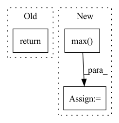

Pattern ID :1291
Before Change
def forward(self, logits, samples, soft):
if samples is None:
return self.gumbel_softmax(logits, self._temperature, self._eps, hard=True)
else:
return -torch.sum(-samples * F.log_softmax(logits, -1), -1)
After Change
if hard:
// Straight through.
index = y_soft.max( dim, keepdim=True) [1]
y_hard = torch.zeros_like(logits, memory_format=torch.legacy_contiguous_format).scatter_(dim, index, 1.0)
ret = y_hard - y_soft.detach() + y_soft
else:In pattern: SUPERPATTERN
Frequency: 3
Non-data size: 3
Instances Fragment ID: 3790712
Project Name: xiaosu-zhu/mcquic
Commit Name: e12be331e275549e5b8a7ef6a7c8dbf6d4e387bf
Time: 2021-04-08
Author: xiaosu.zhu@outlook.com
File Name: src/mcqc/layers/gumbelSoftmax.py
M Class Name: GumbelSoftmax
N Class Name: GumbelSoftmax
M Method Name: forward(5)
N Method Name: forward(4)
M Parent Class: nn.Module
N Parent Class: nn.Module
M File Name: src/mcqc/layers/gumbelSoftmax.py
N File Name: src/mcqc/layers/gumbelSoftmax.py
M Start Line: 40
M End Line: 44
N Start Line: 8
N End Line: 21
Before Change
loss_conf = torch.mean(self.BCELoss(conf, tobj))
loss += loss_conf * self.balance[l] * self.obj_ratio
return loss
def get_near_points(self, x, y, i, j):
sub_x = x - iAfter Change
loss = loss_loc * self.box_ratio + loss_conf * self.balance[l] * self.obj_ratio + loss_cls * self.cls_ratio
num_pos = torch.sum(y_true[..., 4])
num_pos = torch.max( num_pos, torch.ones_like(num_pos))
return loss, num_pos
def get_near_points(self, x, y, i, j):
sub_x = x - i Fragment ID: 3790721
Project Name: bubbliiiing/yolov5-pytorch
Commit Name: d49e041b6f4ef50c5d94ce88d33d147f3227bc77
Time: 2022-01-15
Author: 47347516+bubbliiiing@users.noreply.github.com
File Name: nets/yolo_training.py
M Class Name: YOLOLoss
N Class Name: YOLOLoss
M Method Name: forward(4)
N Method Name: forward(4)
M Parent Class: nn.Module
N Parent Class: nn.Module
M File Name: nets/yolo_training.py
N File Name: nets/yolo_training.py
M Start Line: 158
M End Line: 198
N Start Line: 156
N End Line: 200
Before Change
activated_t = F.relu(out)
linear_out = self.fc2(activated_t)
return linear_out, hidden
After Change
out = self.fc1(lstm_out)
activated_t = F.relu(out)
linear_out = self.fc2(activated_t)
linear_out = torch.max( linear_out, dim=1) [0]
return linear_out
Fragment ID: 3790722
Project Name: hoytta0/knowledgedistillation
Commit Name: d706a04273aacb39d2fc933a09d7d0183582a603
Time: 2021-11-09
Author: 893422529@qq.com
File Name: models/biLSTM.py
M Class Name: biLSTM
N Class Name: biLSTM
M Method Name: forward(3)
N Method Name: forward(3)
M Parent Class: nn.Module
N Parent Class: nn.Module
M File Name: models/biLSTM.py
N File Name: models/biLSTM.py
M Start Line: 26
M End Line: 28
N Start Line: 26
N End Line: 33